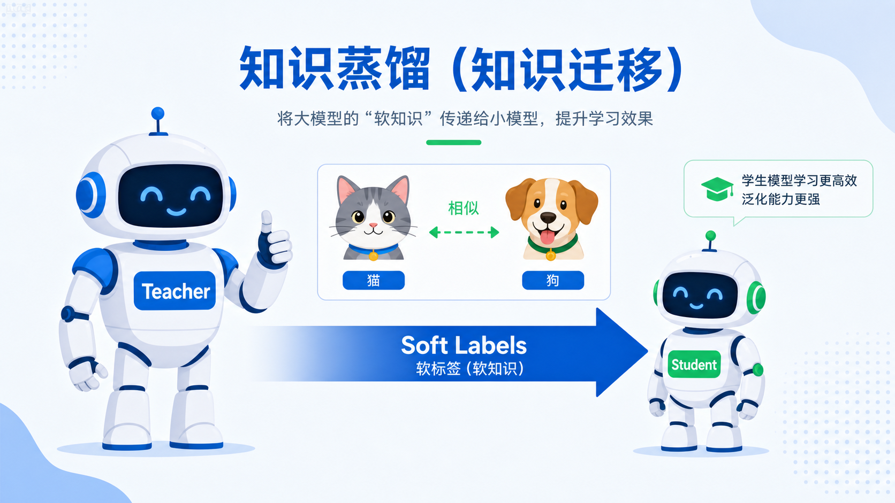

knowledge distillation · teacher → student
浓缩，不是稀释。
这不是情感分析网站，而是一个专门为这节课做的 DistilBERT 讲课页。 你可以在这里直观看到：普通训练只给硬答案，知识蒸馏会把老师的“经验”压成软标签， 再把这些暗知识塞进更小、更快的学生模型。
1.1 亿BERT-base 参数量
6600 万DistilBERT 参数量
1.6×推理速度提升
97%保留的效果
teacher-student flow
soft labels
Teacher · BERT-base
Soft Labels
Student · DistilBERT
普通训练硬标签
学生只知道
“这是猫”
知识蒸馏软标签
老师告诉学生
70% 猫 · 20% 狗 · 10% 兔子

暗知识藏在“像不像”里，而不是只在最终答案里。